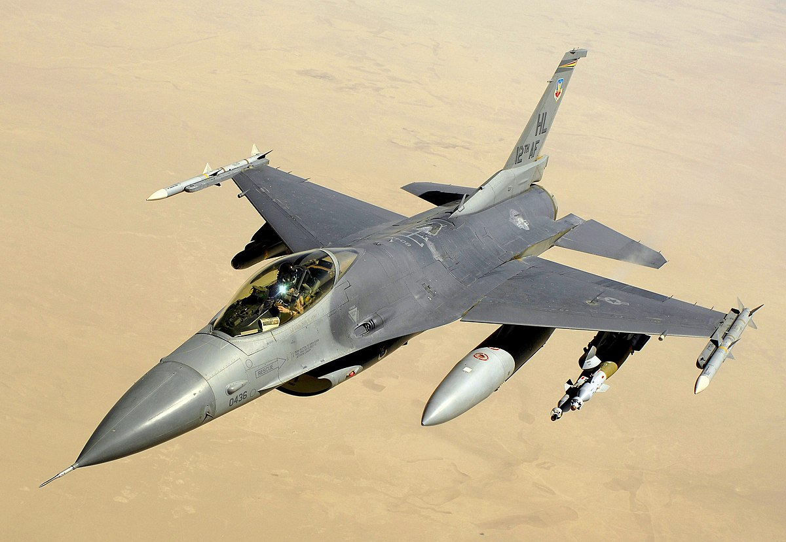

AviationGeek adalah platform yang secara mendalam membahas perkembangan pesawat jet tempur generasi pertama hingga generasi kelima
dari berbagai negara di seluruh dunia. Di dalamnya, tersedia informasi mengenai karakteristik, teknologi, dan sejarah setiap generasi jet tempur,
mulai dari generasi pertama yang muncul pada masa Perang Dunia II hingga generasi kelima yang dilengkapi dengan teknologi mutakhir seperti stealth, supercruise, dan sensor canggih.
AviationGeek juga menyoroti kontribusi dari berbagai negara dalam pengembangan teknologi jet tempur ini,
termasuk inovasi yang dibawa oleh Amerika Serikat, Rusia, Cina, dan negara lainnya. Dengan menyajikan berbagai analisis dan penjelasan terperinci,
AviationGeek menjadi sumber pengetahuan bagi penggemar penerbangan, militer, dan teknologi, serta memberikan wawasan mendalam
tentang evolusi pesawat tempur yang mempengaruhi kekuatan udara di dunia saat ini.

F-16 Falcon
Tua tetapi lincah, kokoh dan tidak tergerus oleh waktu Pesawat tempur generasi ke 4 dari Amerika Serikat yang diproduksi oleh Lockheed Martin

Su-27 Flanker
Pesawat tempur yang menari dengan rudal musuh pesawat tempur generasi ke 4 dari Uni Soviet yang diproduksi oleh perusahaan Sukhoi